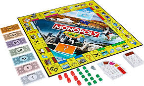
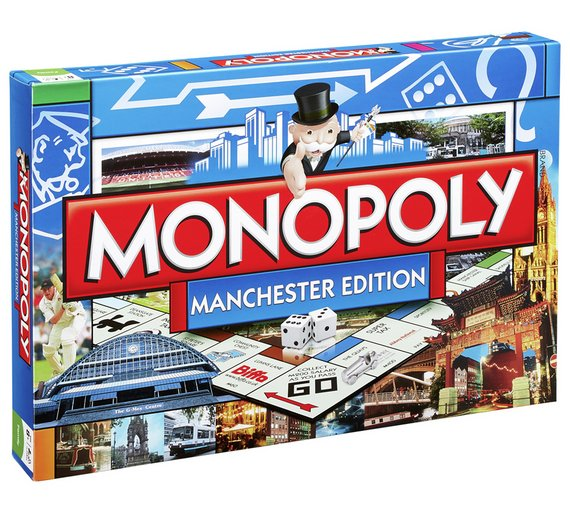

Un juego creado conla funcion de servir como herramienta para enseñar las teorias acerca de la justicia social y economica extraidas del estudio titulado "Progeso y miseria" de Henry Georde
Comercializadopor primera vez en el año de 1936.
A lo largo de 80 años,el juego ha sufrido una notableevolucion. Sus multiples ediciones y sus tantas versiones han dado pie a que se cambiara desde la caja que lo contiene hasta los elemenos que lo componen.Logrando asi mantenerse comoel favorito através de las décadas
Con los años la finalidad del juego cambio para solo disfrutar un buen rato, negociando propiedades y hasta haciendo uso de medios electronicos paratodas las transaccionesque requiere el juego.
